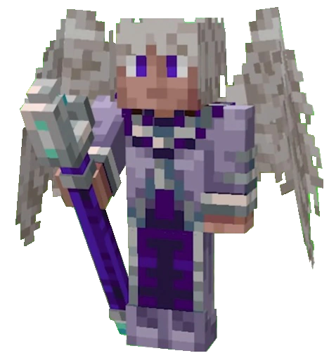

Джодах Ави
| Джодах |
|  |
| Инфо |
| Полное имя Джодах Ави |
Прозвища
|
| Гендер Мужской |
|
Вид
Скайзерновец, Бог, демиург |
| Мир Скайзерн |
| Личное |
Семья
|
| Деятельность |
|
Организации
Орден Великого Древа (ранее) |
"Не забывай, Лололошка, Вселенная всегда стремится к порядку."
— Джодах, 73 серия Голос Времени
Джо́дах Ави́ — псевдо-антагонист сезона Игра Бога, ключевой персонаж во вселенной Лололошки.
Внешность
Раньше имел белые крылья и белый перьевой хвост. По воспоминаниям Спектры, имел черные волосы, но сейчас у него они полностью белые/седые.
Отличается от других Скайзерновцев тем, что его крылья гораздо больше и сильнее[1] в силу проведенного им ритуала Тысячи Глаз. После поглощения сил Богов его крылья стали ещё больше, изменили цвет на черный с красным оперением, а также выросла вторая пара: она визуально меньше основных, и на ней есть несколько глаз, которые могут закрываться/двигаться.
На момент Тринадцати Огней он носит черно-пурпурную табарду с длинной до колен, а на его шее красуется кулон с камнем что переливается из голубого в красный цвет.
Личность
Будучи вполне обычным ребёнком, Джодах являлся изгоем, из-за издевательств, которым подвергался как Ави.
Несмотря на смиренную отстранённость, Джодах показывал готовность ответить на издёвки. Признаки
жестокости
проявил уже в 10 лет, рассмеявшись после поглощения своего обидчика, Лемака. Был сослан в Дезмит в 10
лет,
после убийства Лемака.
На момент ведения своего дневника и до поглощения сил Эолы, Джодах эгоистичен и бессердечен. Он прямо
заявляет, что не испытывает угрызений совести за убийство огромного числа обитателей Скайзерна.
Единственная
его цель — выживание и обретение всё большей силы, которая придавала ему уверенности. Убийство студентов
—
обыденность для него, а поглощение тысячи последних в своём роде демонов — лишь шанс на выживание. Более
того, Джодах кажется гордым тем, что поглотил столько "считавших себя великими", а также проявляет
заинтересованность в поглощении носителей сильных магических способностей. После поглощения тысячи
демонов-разрушителей, видимо, частично обезумел, письменно заявляя, что должен убить Высший совет.
Сантименты ему не нужны. Тем не менее, Джодах проявляет некую крайне слабую чувственность. Небезразличен
к
Скайзерну, собираясь отомстить Зефириону за его уничтожение (На тот момент, лишь намерение уничтожить) .
После поглощения сил полу-богини Эолы, Джодах проникся состраданием, что вылилось в его готовность
отдать
последнее ради помощи Феям. Тяжело что-то сказать о личности Джодаха после этого события, ведь почти вся
информация исходит из его дневника, а он сам заявлял, что настоящие записи в нём лишь до поглощения сил
Эолы. Если же, всё-таки, верить дневнику, то можно сказать, что Джодах самодовольный, властолюбивый,
слегка
высокомерный и временами по-молодому весёлый. Пользуется другими и лжёт ради достижения своих целей. На
этом
этапе Джодах жаждет вселенской справедливости, что, вероятно, связано с его прошлым. Считает, что не
божественные существа имеют право на жизнь. Достаточно терпеливый, но строгий (порой даже слишком).
Любит
своего родного брата, Джейса. Похоже, испытывает какие-то чувства к своим ученикам, но смерть Эмриса по
собственной глупости вызывает у него, разве что, разочарование.
В Идеальном Мире ведёт себя надменно и выглядит немного лицемерным, обвиняя Ровоама Кэлхуна в том, что
тот
провозгласил себя богом, решив, что может вершить судьбы других (в своё время, Джодах поступил так же).
Не
равнодушен к разлуке Ровоама и Райи, хотя и неясно, сопереживает ли он данным людям или просто понимает
печальность ситуации.
На момент Голоса Времени он весьма приятен в общении, однако сохраняет возвышенный тон, манеру речи и
самолюбие. В оригинальном будущем исходной временной линии Поэны Джодах ведёт себя безразлично, беззаботно
и
самонадеянно. В нетрезвом виде, он отправил Эо в прошлое ради шутки над временем, которую находил
уморительной, при этом, дав Эо ложную надежду; как итог, Джодах был готов отправить его в Тюрьму Времени
лишь за хвастовство. В конечном итоге его действия отчасти стали причиной временного парадокса. В этом
сезоне можно наглядно увидеть остатки смертной натуры Джодаха, когда он сильно переживает и даже почти
срывается, потеряв контроль над ситуацией, что давали ему его невероятные способности. В своё оправдание
он
заявляет, что на тот момент был крайне молод и упивался своим могуществом. Сейчас он всё-таки сожалеет о
содеянном, пускай и продолжает сваливать всю вину на Лололошку.
В Тринадцати Огнях личность Джодаха выглядит весьма неоднозначно. Он ведёт себя по-старому надменно,
видимо,
не принимая во внимание чужие переживания. Порой, может быть до бессердечия безразличен к другим.
Кажется
неискренним, сначала радостно обнимая Кнефмтити в финале сезона, а после непосредственно давая понять,
что
ему всё равно на дальнейшую судьбу богов Мисра; позже также весьма быстро успокаивается после
перемещения
Лололошки в альтернативную реальность, хотя до этого вёл себя довольно тепло с последним.
Джодах очень целеустремлён, добивается своей цели несмотря ни на что; готов идти не по головам, а по
трупам.
Твёрд в своих решениях. Видимо, имеет мышление "цель оправдывает средства", хотя не равнодушен к тому,
какие
средства он использует. Имеет представление о морали, и она ему не безразлична. Серьёзен, но обладает
чувством юмора. Хорошо владеет своими эмоциями и отлично скрывает, что у него на уме. Очень умён, ведь,
имея
возможность видеть будущее, смог разработать безукоризненный план и воплотить его в реальность (Игра
Бога).
Готов рисковать; возможно, безумен.
Способности
- Телепортация и левитация, базовые способности для скайзерновцев;
-
Способность поглощения жизней семьи Ави: может поглощать силы других живых организмов. Его способность
проявила себя в 10 лет и первой его жертвой был Лемак.
-
Способности полубогов. Имея их, неофициально стал богом и получил возможность неограниченно
взаимодействовать с божественной силой:
- Люциус: Огонь;
- Эола: Вода (в последней серии Игры Бога отдал силу Селести);
- Зефирион: Воздух (в последней серии Игры Бога отдал силу Джейсу).
-
Способности других:
- Междумирец-Демиург: перемещение между мирами и во времени, возможность откатывать время вспять;
-
Демоны:
- Множество способностей + Тысяча Глаз;
- Виденье будущего: ранее были только способности прорицания, не дающие точный прогноз (не работает на Лололошку);
- Полет с помощью крыльев. Ранее был недоступен ему, однако, с поглощением 1000 демонов, смог летать;
- Нечувствительность к боли: срывал с себя плоть и "окрашивал снега в красный" на горячих источниках в горах, однако из-за магии Эолы не мог прикоснуться к Люциусу;
- Бессмертие: ему больше не нужно поглощать жизни для выживания, много раз прыгал со скалы и выжил;
- Бодиморфизм; заклятие не оставляет следов.
-
Способности полубогов. Имея их, неофициально стал богом и получил возможность неограниченно
взаимодействовать с божественной силой:
- Магия Разрушения, обучался ей в Академии Скайзерна;
- Стирание и корректирование памяти. К примеру, он смог стереть из членов Ордена все воспоминания о Довине Баане;
- Иммунитет к временному парадоксу.
Интересные факты
-
Сам дал себе титул "Вечный архимаг", когда основывал Орден в Даливарике;
- В прозвище "Джодах, Вечный Архимаг" содержится сразу две отсылки - на персонажа из карточной игры Magic: The Gathering, и на никнейм сценариста Archmage Eternal;
- Исходя из его дневника, можно предположить, что Джодах поглотил как минимум 20357 жизней (19356 до ритуала, 1000 во время ритуала, 1 - после (Междумирец-Демиург) и более 792 способностей;
- Год рождения по ново-скайзерновскому календарю - 161;
- Бывший заключённый Тюрьмы Времени, смог сбежать при помощи Люциуса;
- Единственный, кто может понимать и влиять на решения Смотрящего;
-
В первой серии Идеального МИРа Лололошка получил сообщение с подписью "JDH" и предположил, что его
написал Джодах. Однако сам Джодах ответил на это отрицательно.
- Позже в сезоне Тринадцать Огней выяснилось, что JDH — это отдельный персонаж.
-
После событий Голоса Времени, он не может появляться в полноценных мирах, иначе временной парадокс
усилится.
- Из-за временного парадокса, его способность видеть будущее перестала работать на Лололошке, чем Джодах очень раздражён.
- Хоть статуи в Мисре и посвящены Джодаху, под личиной Бога-Фараона на публике скрывается Салик.
- Посох Джодаха использовался как один из огней для Отправления.
- Любит кофе. Считает кофе Аргуса замечательным;
- Любит пиво Матильды, ведь только от него он пьянеет;
- Исходя из информации, можно смело говорить, что Джодах обезумел от своих сил и своей власти.
- Появился в качестве воспоминания Лололошки в сезоне Последняя реальность.